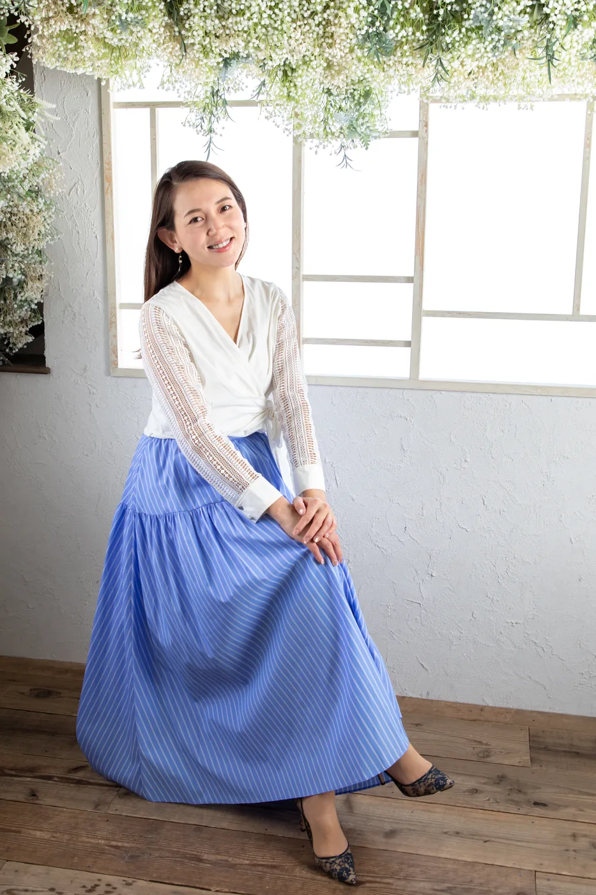
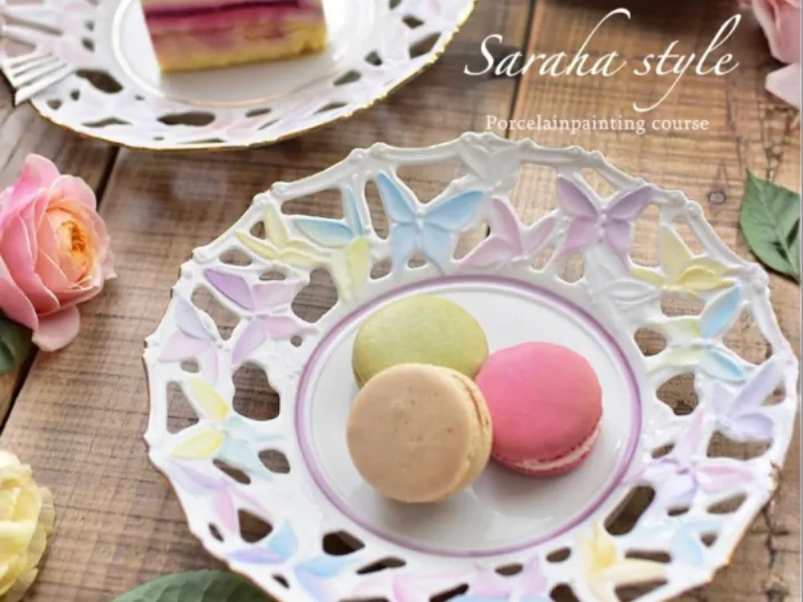

私も同じように
悩んでいました

ポーセラーツに魅了され、当時OLだった私は、資格を取得して会社を辞め、ポーセラーツの教室を始めました。
ワクワクした気持ちで始めたはずの教室。でも、現実はそう甘くはありませんでした。

「資格があれば教えられる」と思っていたのに、実際は転写紙を貼る技術以上のことが自分にはできない。資格はあるのに自信がない。教える自信もないという状態だったのです。
必死に手探りで続けていましたが、ある程度作品を作られた生徒様は、次々と教室を離れていってしまいました。
大好きなポーセラーツを仕事にしたのに、「このままでは続けていけないかもしれない」。
そう気づいたとき、やみくもにスキルアップレッスンを受けたり、資格を増やすことをやめました。
私に本当に必要だったのは、絵の具や特殊技法を本質から理解し、実践に活かせる力。そして、自信を持って生徒様に届ける力でした。
そこに時間と自己投資を注いだ結果、今では「また来たい」と言っていただける教室になりました。笑顔があふれる場所を、やっとつくれるようになったのです。
13年教室づくりをしてきて
気付いた、
大切なことが3つあります。
- 本質から学んだ技術を磨くこと
- ちゃんと生徒様に届く
デザインを作ること - 売り込まずに、自然と生徒様が
集まる仕組みを作ること
これが、今より作品づくりを楽しみながら、周りの人に笑顔を届けられる先生になるための法則です。